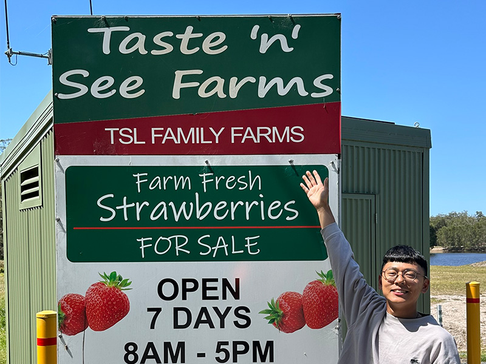
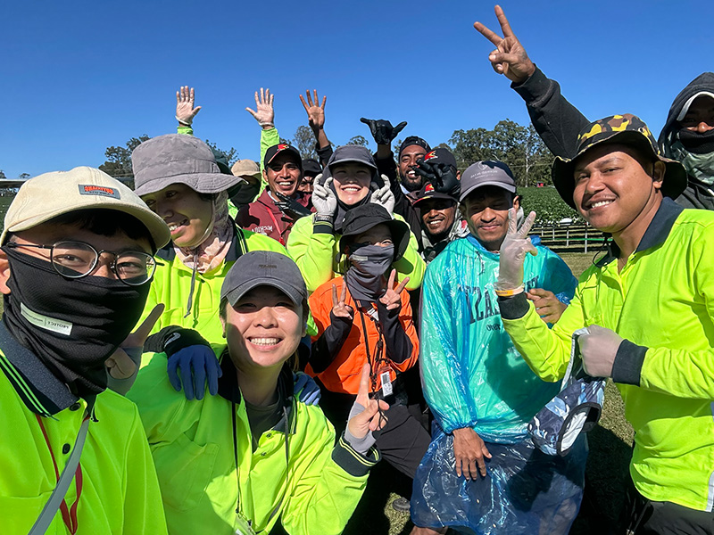
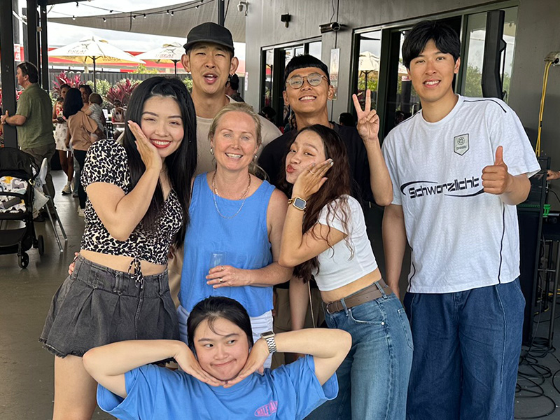
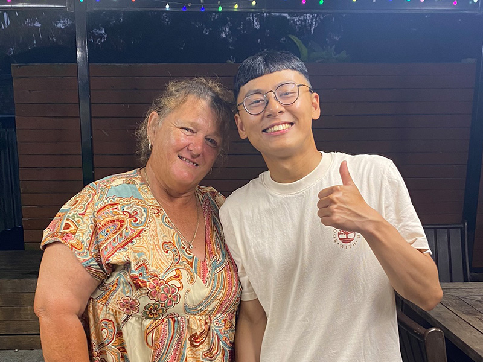
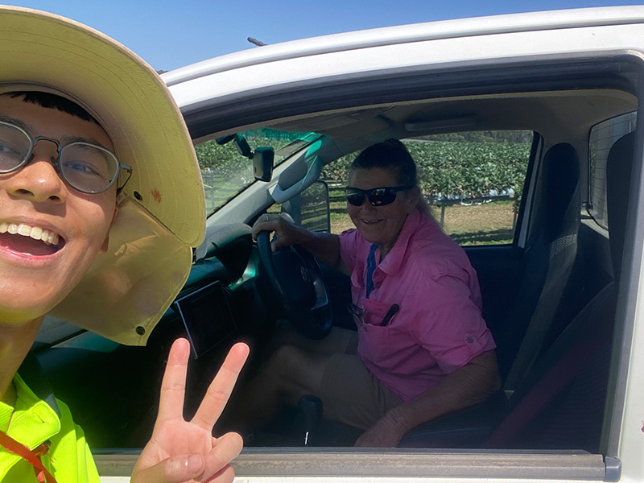
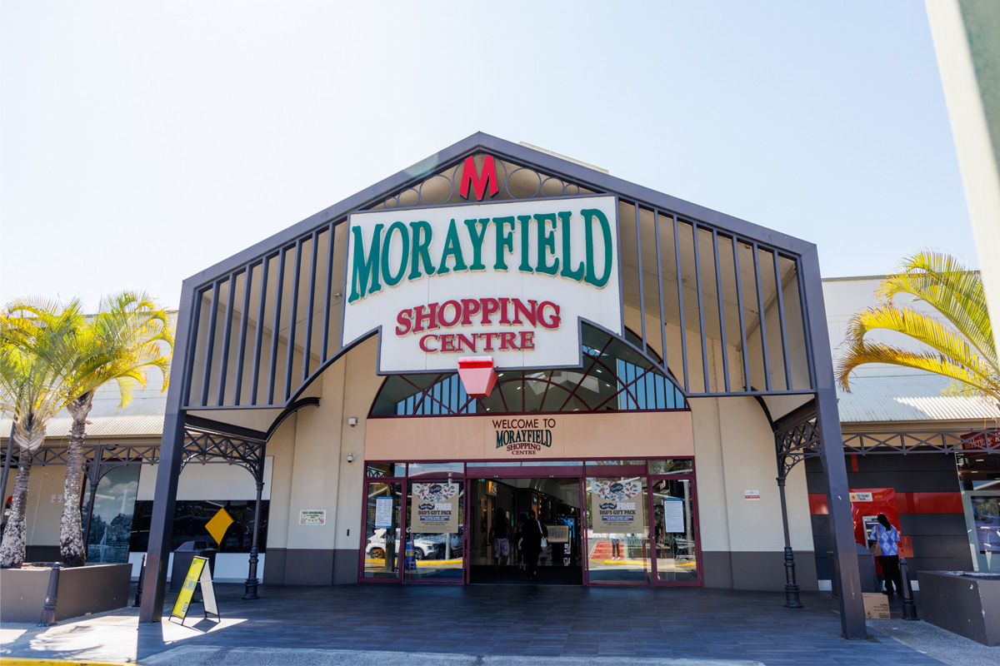
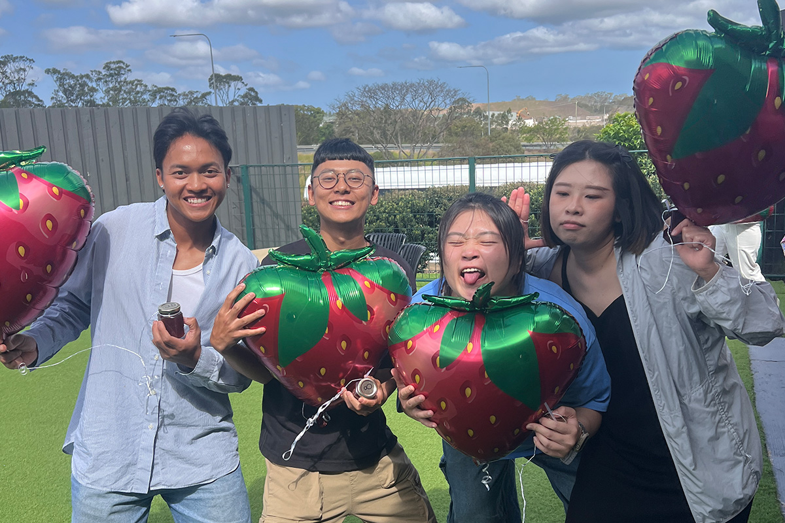

132 天，在 Caboolture 開始我的澳洲打工度假
基本資訊
農場
TSL Family Farms
地點
Caboolture, QLD
職位
Picker
期間
2025/06/02 – 2025/10/12
時薪
AU$31/hr
工作天數
132 天
01
我是 2025/5/18 入境布里斯本，但其實早在一個月前，我還在奧克蘭的時候，就已經開始瘋狂投遞集簽工作。
一開始，我希望能繼續做服務業，因此投了很多偏遠地區或離島的工作，像是摩頓島、凱恩斯、達爾文等地，不過最後幾乎都石沉大海。
後來，透過一位在紐西蘭打工度假認識的朋友介紹，我得知卡布丘有一間五星評價的草莓農場，採時薪制、白人老闆、合法合規。當時查了不少資料，「澳打四大地獄」幾乎每篇文章都會提到卡布丘，讓我猶豫了很久，到底該不該冒這個險。
但眼看著入境澳洲的日期越來越近，我最後還是決定先去看看。如果真的不適合，大不了戰術性逃回布里斯本哈哈哈哈。最後，我和老闆透過簡訊確認了上工日期。我的澳洲草莓人生，就這樣開始了。
奧克蘭機場國際線飛往布里斯本
02
TSL Family Farms 是由三姐妹 Tracey、Sam、Laura 共同經營的家庭式中型草莓農場。
我在 2025 年完整待了一個草莓季，擔任 Picker（採手）。農場共有兩塊草莓場與一間包裝廠。
最讓我喜歡的是，所有草莓田都是高架栽培，所以不用一直彎腰，推車偶爾會有點偏左或偏右，但整體操作並不困難，而且可以戴耳機聽音樂，整體相比我後來去過的其他農場，我覺得 TSL 的工作環境算是舒服很多。

TSL 入口的招牌

二場同事的合照
90% 變紅即可採摘，採的時候需要保留一小梗。要特別小心我自稱為「陷阱草莓」的果，正面看起來全紅，但翻過來背面還是綠色，很常為了速度沒辦法每顆都確認到，然後就會被 supervisor 抓到哈哈。
我覺得 TSL 使用的農藥可能沒有非常重，所以雜草長得滿快，固定每週三會安排除草。同時也要把爛果摘除，不然很容易感染其他草莓，整條草莓道就會開始生病。
當果量不好、工作比較少時，老闆會安排施肥。這算是整個農場裡最輕鬆的工作，只需要把肥料倒進土裡即可。
草莓季結束後，大量田區會關閉。工作內容就是：拔掉水管 → 清除土包 → 等待下一季重新開始。
TSL 採用時薪＋獎金制度。我當時的基本時薪是 AU$31/hr。如果當天採收的草莓價值超過基本時薪（依每天果價而定），就可以拿到額外獎金。
延伸閱讀
澳洲打工度假一年的收入與開銷 →雖然農場是由三姊妹共同經營，但基本上與我們聯繫的主要都是 Sam。老闆人很好，會替員工著想。有時候因為果季不好，當週工時不長的時候，老闆還會替我們感到抱歉，然後盡可能幫我們加長工時。

季末 Party 與 Sam 的合照
農場有兩位 Supervisor：Sonya 和 Judy。她們就像奶奶一樣，講話很快，一開始有點溝通障礙，但後來就習慣了，而且會發現她們特別搞笑。她們會提醒我們背包客速度不能太慢，不然老闆會不開心，但其實也沒有真的把誰開除啦哈哈。我覺得整個農場的氛圍都非常好。

在 Sonya 家 Party 的合照

離職當天與 Judy 的合照
03
後來去過更多真正偏遠的小鎮後，我才發現：Caboolture 其實一點都不偏僻。
這裡有三大超市、亞洲超市、日式韓式泰式餐廳、大型購物中心。想逛 Costco 可以往 North Lakes，想去海邊可以往 Sunshine Coast，假日也能去布里斯本或黃金海岸走走。
如果能找到一份穩定工作，我覺得 Caboolture 是個很適合打工度假生活的地方。
我當時有租車，所以找房時選在離農場開車約 15 分鐘的地方，靠近 Shopping Centre，出門購物非常方便。房租是 $180/週含 bills。基本上只要有車，在 Caboolture 生活相當方便，整個小鎮不大，幾乎 15–20 分鐘車程內就能到任何地方。
找房我是用 Facebook、Flatmates、Realestate 去找的。其中要特別小心 Facebook，詐騙非常多，我自己就遇到好幾個。

Morayfield Shopping Centre
04
我是在 6/2 開始工作。當累積到 13 張 Payslip 時，我就在 8/30 立刻送出了二簽申請。
不過我的二簽直到 11/14 才核准，所以後來又多累積了 7 張 Payslip。
十月中，第二草莓場正式關閉。部分 Picker 與 Packer（包括我）也成為第一批離開的人。農場特地舉辦了一場 Season End Party。
每年最令人期待的，就是抽獎活動。獎品大小會依照當年的收成決定。我們那一年因為冬天不夠冷，又一直下雨，草莓產量並不好，所以原本沒有抱太大的期待。
結果最後……我居然抽中了 AU$1,000！後來請朋友們吃在布里斯本的「百家千味」，把獎金花得差不多了 XDDD

抽到獎的我與朋友們
05
當第二草莓場開始傳出即將關閉的消息時，大家也開始陸續尋找下一份工作。每個人都知道，這段生活快要結束了。
我和另外幾位同事決定一起前往墨爾本，工作都找好了，也計畫一路 Road Trip，從 Caboolture 開車到墨爾本。
一方面很期待新的生活。另一方面，也很捨不得那些一起生活了將近半年的朋友與同事。
有人往北，有人往西。有人回台灣，也有人前往紐西蘭，大家都朝著不同的人生方向前進。
我想，正因為大家都知道相聚的時間有限，未來也不一定還會再見，所以每一次見面都特別珍惜。
每見一次面，就少一次的感覺，我想或許這就是打工度假迷人的地方之一。
某些人可能只會出現在你人生中的某一個季節，而那個季節，剛好是在 Caboolture 的草莓田裡。
點擊觀看影片 · Instagram